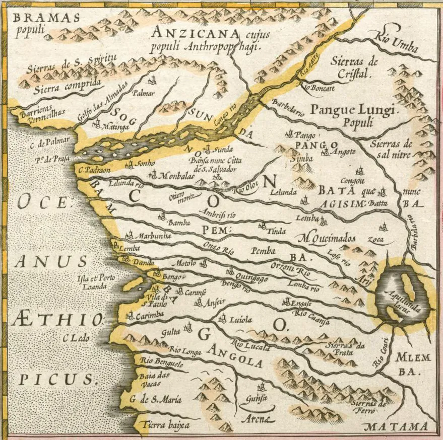
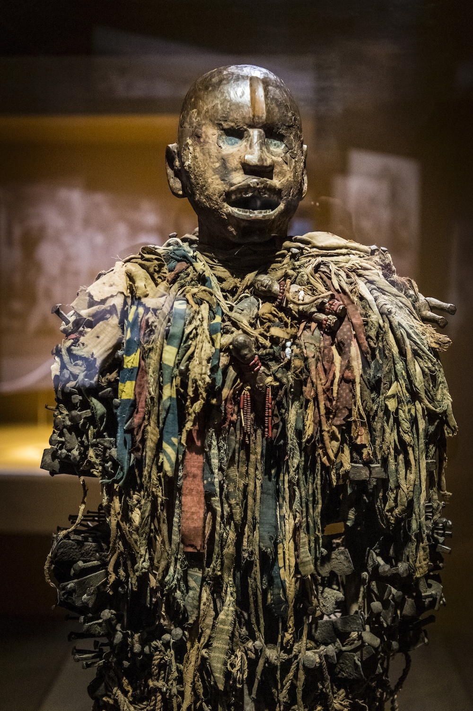
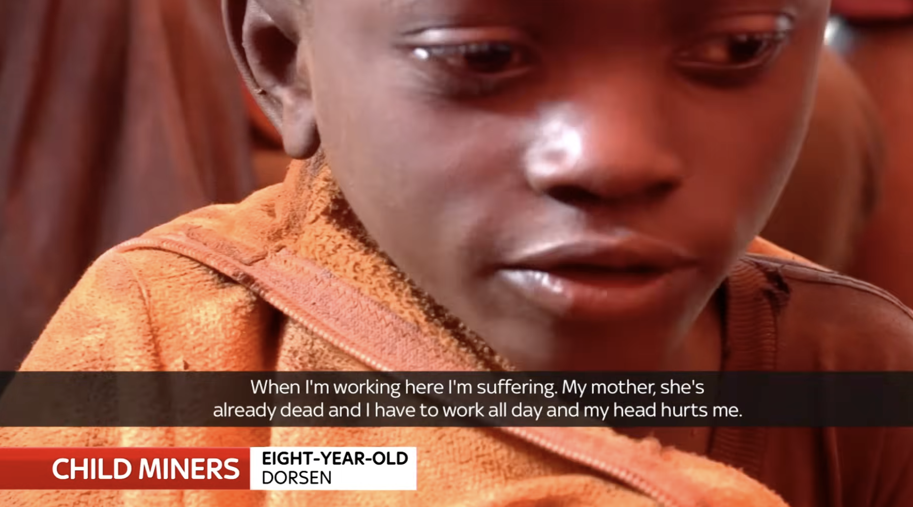
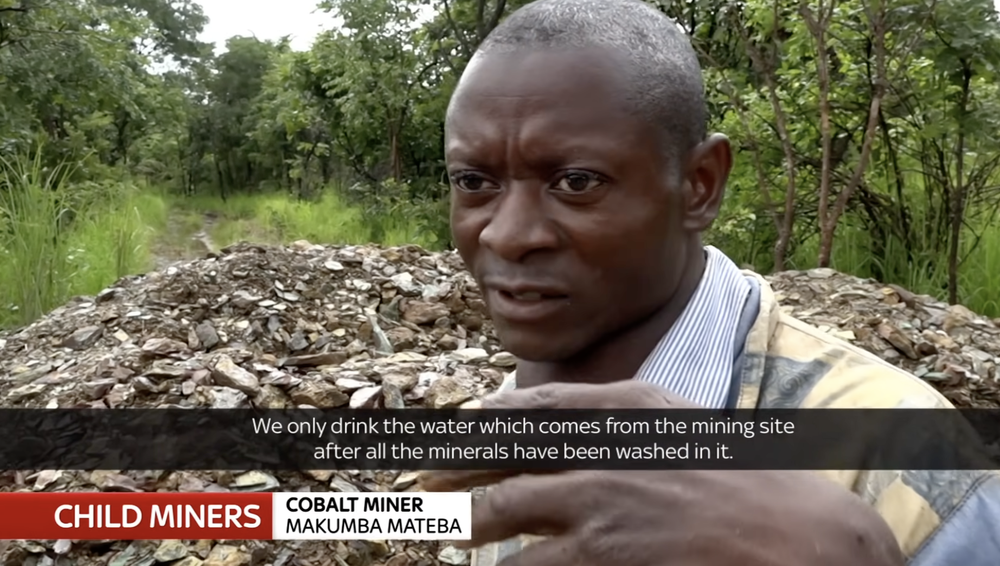
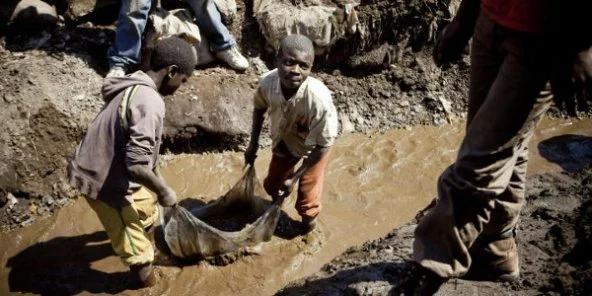
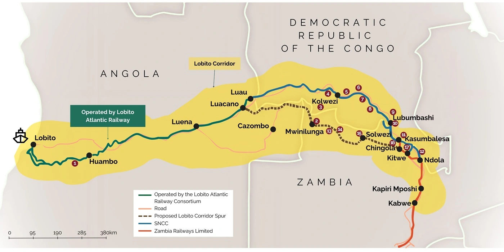

Seventy percent of the world's cobalt comes from the Democratic Republic of the Congo. This project follows that mineral back through time to ask a question that does not have a comfortable answer. Before smartphones. Before electric cars. Before colonial borders. The Congo was already being extracted.
A Multimedia History of the Congo's Cobalt
The Living Battery
Why does Congo hold so much mineral wealth and remain so poor?
I. Currency of the Cross
II. The Extraction Machine
III. Sovereignty & Sacrifice
IV. The Hottest Commodity
V. The New Great Game
Module 1: 14th Century to 1884
Precolonial Wealth
The Katanga region had been famous for its minerals long before European contact. Local societies extracted copper and shaped it into tools, jewelry, and currency that circulated across Central Africa.
The Katanga Cross, a heavy copper ingot cast in the shape of an X, was not decorative. It was money. This was an organized economy with its own logic, its own standards of value, and its own trade networks.

Katanga Cross
Metallurgy

Trade Routes

Artifacts
Module 2: 1885 to 1959
Leopold's Engine
In 1885, European powers met in Berlin to divide Africa among themselves. The Congo did not become a colony in the usual sense. It became the personal property of King Leopold II of Belgium.
Land and labor were reorganized into an extraction system. Rubber and copper flowed outward to European markets. The Congolese people who lived above those resources had no claim, in Leopold's accounting, to anything produced from them.
Historical context: The Congo Free State under Leopold II
Primary Evidence
An Open Letter
In 1890, George Washington Williams, an American historian and Civil War veteran, traveled to the Congo and witnessed Leopold's system firsthand. What he saw moved him to write directly to the king, documenting atrocities the Belgian public had not been told about.
His letter is one of the earliest sustained critiques of the Congo Free State. It makes clear that the violence was not incidental. It was the policy.
1890 · George Washington Williams
"Your Majesty's Government has sequestered their land, burned their towns, stolen their property, enslaved their women and children, and committed other crimes too numerous to mention in detail... All the crimes perpetrated in the Congo have been done in your name."
Corporate Power
Union Minière
When Leopold's personal rule ended under international pressure, corporate extraction continued without interruption. Union Minière du Haut-Katanga took control of the copper and mineral economy in close partnership with the Belgian colonial administration.
The archival footage at right captures an attitude that outlasted the colonial period. A corporate spokesman acknowledges violence and instability, then expresses confidence that profits will not be disrupted. The two concerns are treated as unrelated.
1964 Archival Interview: Director of Union Minière (Starts at 0:31)
Resistance
The 1941 Kikole Strike
‘We have the right to eat eggs and own automobiles just like the whites. Let us break into the store and divide up the stock. It belongs to us anyway, since the Union Minière has bought these goods with our labour’
Strike Leader at Kikole Tin Mines, 1941Congolese workers under colonial rule were not passive. At Kikole and other mining centers, workers organized and stated plainly what their labor was worth. The colonial administration suppressed the strike by force. The demands did not disappear. A generation later, they reappeared in the language of independence.
Module 3: 1960 to 1997
The Dream of Sovereignty
The Congo became independent on June 30, 1960. Patrice Lumumba, the country's first elected Prime Minister, delivered his independence speech in front of Belgian officials who had expected a ceremony. It was a direct demand for dignity and economic sovereignty.
His argument was simple: political freedom without control over the country's resources meant nothing. Within months he was removed from office. In January 1961, he was assassinated.
June 30, 1960: Independence Day Speech (Starts at 1:44)
Cold War Strategy
The Uranium Connection
The speed with which Western governments moved against Lumumba was not incidental. Beneath Katanga lay uranium. The Shinkolobwe mine had supplied the ore used in the Manhattan Project. For the United States and its Cold War partners, who controlled the Congo's minerals was a question of nuclear strategy.
Belgium and the United States were aligned in their aim to remove Lumumba before he could consolidate resource sovereignty. On January 17, 1961, less than six months after becoming prime minister, he was murdered in Katanga.
1945
Manhattan Project
Uranium from the Shinkolobwe mine in Katanga is used in the atomic bombs dropped on Hiroshima and Nagasaki, making the Congo one of the most strategically important territories on earth.
1961
Assassination of Lumumba
Lumumba is killed with Belgian and CIA involvement. The conflicts that follow claim over one hundred thousand Congolese lives.
1965
Mobutu Seizes Power
Mobutu Sese Seko takes control, backed by Western powers who needed a reliable ally in Central Africa. Washington treats the Congo's minerals as a Cold War asset against the Soviet Union.
1967
Nationalization under Mobutu
Mobutu nationalizes the mining sector through the state company Gecamines. The revenues flow to the regime. The conditions of Congolese working communities change very little.
Resistance and Repression
The Price of Dissent
The people paying the price of Western-backed dictatorship did not pay it quietly. During the uprisings led by Pierre Mulele in the 1960s, rebels seized industrial towns like Kolwezi and invited workers to form tribunals, putting managers and foremen who had brutalised them on trial. The colonial hierarchy was being judged by those it had exploited.
When Mobutu's forces retook those towns, often with white mercenaries from Europe and the United States, workers who had sided with the rebels were killed alongside their families. Those who fled before the troops arrived were the only ones who survived.
Neocolonial Continuity
Mobutu Sese Seko
1965 to 1997
Laurent-Desire Kabila
1997 to 2001
Joseph Kabila
2001 to 2019
Felix Tshisekedi
2019 to present
Despite shifts in ideology and alignment, the DRC has seen little genuine democracy or social progress under any of these governments.
Module 4: 21st Century to Present
The Cobalt Boom
Cobalt stabilizes the lithium-ion batteries in smartphones, laptops, and electric vehicles. The global shift to green energy runs on Congolese soil, worked by Congolese hands.
Thousands of people, including children, work in artisanal mining operations across Katanga. They use basic tools in tunnels that collapse without warning. The minerals they extract end up in devices sold for thousands of dollars in markets they will never reach.
Sky News: Children's Exploitation in Congo Mines
Testimony
The Human Data
‘It was a living hell. We saw things that no child should see. There was a culture of rape and violence. Girls often fell victim to rape, which, as children, we were powerless to prevent. Sometimes lives were lost for a few francs’.
Yanick Kalumbu Tshiwengu, former artisanal minerTshiwengu began working in the mines at age eleven. What he describes is what supply chain audits do not capture. Global demand for batteries has grown without serious concern for the conditions under which they are produced.



Module 5: Present Day
The Neoliberal Shift
When Mobutu's regime collapsed, the DRC was pushed into a new arrangement that proved no less damaging. Under pressure from the IMF and World Bank, the government adopted the Mining Code of 2002. The code gave foreign companies favorable tax rates, open access to repatriate profits, and the right to circumvent labor and environmental standards.
A stability clause locked these terms in place for ten years, barring any fiscal changes until 2022. The Lutundula Commission later revealed that President Kabila and other officials had secretly dealt with corporations for personal gain. The real benefits went to multinational firms.
2002 · Mining Code · DRC
"The code forbade amendments for ten years... any changes to the fiscal regime could not come into effect until 2022. Foreign companies gained favorable taxation, an open door to expatriate profits, and the right to circumvent labor regulations."
The Pivot
Breaking the Monopoly
For the first time in decades, Western mining companies faced real competition. Chinese state and private firms, backed by lines of credit from Chinese banks, began buying major cobalt operations across the DRC. By the late 2010s, they controlled fifteen of the country's seventeen mining complexes.
That shift changed what the DRC government could demand. In 2018, it amended the mining code, removed the stability clause that had protected foreign firms for a decade, and raised royalty rates on strategic minerals from 2% to as high as 10%.
'Tax and royalty exemptions given to multinational mining companies prevented African states from retaining a fair share of profits... it is necessary to renegotiate some of them.'
Festus Mogae, former President of Botswana, 2008IPIS Interactive Map: Monitoring Congo's Mineral Supply Chains
Infrastructure vs. Extraction
The 2024 Deal
In January 2024, the DRC finalized a renegotiated minerals-for-infrastructure contract with China worth $7 billion. It prioritizes national road construction and secured a 40% Congolese stake in the Busanga hydropower plant. Saudi Arabia, with roughly the same land area but less than half the population, has twenty times more paved roads than the DRC.
Western donors had previously withheld $11 billion in debt relief to block an earlier version of this deal. When that failed, the US sent legal consultants to Kinshasa to target the Sicomines joint venture, while leaving broader problems in the mining sector untouched.
The Joint Venture at the Center of the Dispute
Sicomines
A copper and cobalt mining partnership between Gecamines, the DRC state mining company, and Chinese investors. Under the 2024 agreement, Gecamines receives a 1.2% royalty on proceeds and the right to market 32% of production.
$7B
Infrastructure Financing Secured
20x
More paved roads in Saudi Arabia than the DRC, despite similar land area.
Geopolitical Rivalry
The Lobito Corridor
When the 2024 renegotiation was announced, the United States moved quickly on the Lobito Corridor. The project spans the DRC, Angola, and Zambia, and is designed to route minerals toward Western markets through Angola's Lobito Port.
The Corridor is part of the Partnership for Global Infrastructure and Investment, Washington's direct answer to China's Belt and Road Initiative. The stated purpose is investment and development. The actual concern is who controls the minerals as demand grows.
'An electric vehicle is essentially a battery, and what's in the battery is Africa. There is no time to waste. We have been absent from the scene for far too long.'
Amos Hochstein, Senior Adviser to President Biden
The Lobito Corridor: DRC, Zambia, and Angola
Conclusion
True Independence
- Copper for trade.
- Rubber for industry.
- Uranium for war.
- Cobalt for the digital age.
When does the battery get to recharge?
When does the Congo get to own its own power?
Congolese scholars and activists have spent decades defining what resource sovereignty actually requires. Genuine economic independence, they argue, is not just political self-governance. It is the right to decide what gets extracted, and where the money goes. That is what Lumumba argued in 1960. It has not yet been settled.
Annotated Bibliography
Sources
Primary Sources
Independence Day Speech
Patrice Lumumba. Leopoldville, DRC, June 30, 1960. (YouTube)
Audio-visual record of Lumumba's demand for political and economic sovereignty on independence day.
Children's Exploitation in Congo Mines
Sky News. (YouTube)
Contemporary reporting on child labor and dangerous conditions in Katanga's artisanal mines.
An Open Letter to King Leopold II (1890)
Williams, George Washington. (BlackPast)
One of the earliest documented critiques of Leopold's Congo, covering atrocities and forced labor.
Union Minière Spokesman Interview (1964)
Archival Footage. (YouTube)
Archival evidence of how corporate leadership treated profit continuity as separate from human cost during post-independence instability.
Testimony from the 1941 Mining Strike
Strike Leader at Kikole Tin Mines. (Tricontinental, 2024)
First-hand account of organized labor resistance in the colonial mining sector.
Artisanal Miner Testimony
Tshiwengu, Yanick Kalumbu. Kolwezi. (Tricontinental, 2024)
Personal testimony giving a human account of conditions in modern artisanal mining.
Secondary Sources
Cobalt Red: How the Blood of the Congo Powers Our Lives
Kara, Siddharth. St. Martin's Press, 2023.
Field investigation documenting labor exploitation and the human cost of the tech supply chain.
The Congolese Fight for Their Own Wealth
Tricontinental: Institute for Social Research. Dossier No. 77, 2024.
Political history of extraction in the DRC, from colonialism through the current geopolitical contest over cobalt and lithium.
DRC Minerals-for-Infrastructure Deal
Bloomberg / Africa Intelligence, 2024.
Details on the $7 billion renegotiated contract and specific royalty rates for Gécamines.
Lobito Corridor Infrastructure Initiative
US Department of State / EU Commission, 2023.
Documentation of the geopolitical strategy to secure mineral supply chains for the Global North.
King Leopold's Ghost
Hochschild, Adam. Houghton Mifflin, 1998.
Detailed account of systematic violence and forced labor under Leopold's personal rule of the Congo.
The Assassination of Lumumba
De Witte, Ludo. Verso, 2001.
Details the political conspiracy and Cold War resource interests behind Lumumba's death.
The Congo from Leopold to Kabila: A People's History
Nzongola-Ntalaja, Georges. Zed Books, 2002.
History of extraction and resistance in the Congo, written from a Congolese perspective.
Mining Industry of the Democratic Republic of the Congo
Wikipedia, Feb 2026.
Background context for timeline verification and tracking policy shifts.